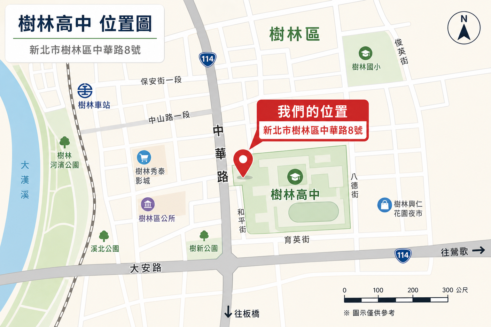

2026
REBUILT 賽季：土耳其區域賽與休士頓世界賽
於 Bosphorus Regional 排名第 8、擔任第 5 聯盟隊長並獲區域賽亞軍；Yeditepe Regional 排名第 5、擔任第 4 聯盟隊長；世界賽 Archimedes Division 排名第 54。
Bosphorus RegionalYeditepe RegionalArchimedes Division
Team 9427 - iDeer 隸屬 FIRST Robotics Competition，官方登錄地點為新北市樹林區。2026 賽季隊名資料列出新北市裕德高中與新北市立樹林高中，並持續由教育、企業、基金會與社群夥伴支持。
從 CAD、CNC、Java 控制到賽場策略，FRC 的核心是把跨域能力壓進一台真正能比賽的機器人裡。
依 FIRST 官方賽事資料整理，保留最重要的年度節點與成績。
於 Bosphorus Regional 排名第 8、擔任第 5 聯盟隊長並獲區域賽亞軍；Yeditepe Regional 排名第 5、擔任第 4 聯盟隊長；世界賽 Archimedes Division 排名第 54。
在 New Taipei City Regional 進入決賽，Colorado Regional 獲 Judges' Award，並於 FIRST Championship Johnson Division 獲 Rising All-Star Award。
於 Southern Cross Regional 排名第 20，進入聯盟賽並獲 Rookie All Star Award 與世界賽外卡資格，後續前進 Houston Daly Division。
列出近三季具代表性的官方獎項。
2026 FIRST Championship Archimedes Division
2026 Bosphorus Regional
2026 Yeditepe Regional
2025 New Taipei City Regional
2025 Colorado Regional
2025 New Taipei City Regional
2024 Southern Cross Regional
2024 FIRST Championship Qualifying Award
團隊不只比賽，也把 STEAM、公益與國際交流帶回社群。
曾於校慶擺攤、參與 2023 Taipei Maker Faire，向民眾介紹 FRC 與機器人教育。
與贊助商合作舉辦國中、小 STEAM 教育手作坊，讓工程學習從賽隊延伸到更年輕的學生。
2024 澳洲賽季與成功高中 7497 前往 UNSW，並與當地資深隊伍 4729 交流。
參與科技女力論壇、世界糧食日倡議，以及華山基金會樹林獨居老人關懷活動。
樹林高中公告指出，FRC 9427 iDEER 參與 2025 暑期樹科獎科技創作競賽，擔任工作人員並進行機器人展演。
樹林高中公告列出 2025-2026 賽季甄選資訊，招募對機器人有熱情的高一與高二學生。
從樹林出發，到澳洲、土耳其、美國休士頓，隊伍足跡逐年擴大。

隊伍基地與 New Taipei City Regional 參賽地區。
2024 Southern Cross Regional，rookie 年即取得世界賽資格。
2026 Bosphorus Regional 與 Yeditepe Regional。
2024 Daly、2025 Johnson、2026 Archimedes Division 世界賽舞台。
使用樹林高中公告列出的公開 YouTube 影片縮圖作為視覺入口。
頁面內容依公開資料整理；未來若隊伍有最新照片或正式文案，可直接替換內容。